Graphic Design
Program Book
GRA 322 Technology for Design II
Visual Communication Design
Brianna Smith
Lines and Elipses
GRA 220 Design Drawing
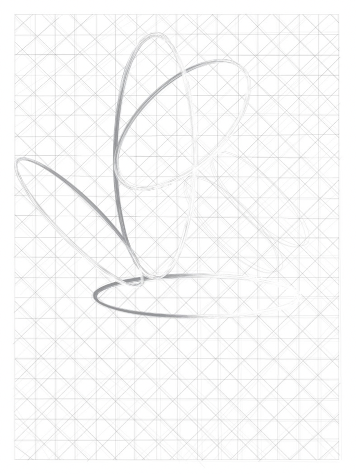
While leaving ± 1-inch margins, draw horizontal lines in Adobe Il- illustrator ± 1-inch on-center from top to bottom. Repeat with vertical lines from left to right. Repeat with 45° lines in one direction and then in the other. Draw four ellipses. Each will have its major axis relate to one of the original line directions. Try one of the following proportions for each ellipse: 1:2, 1:3, 1:4, and 1:5.
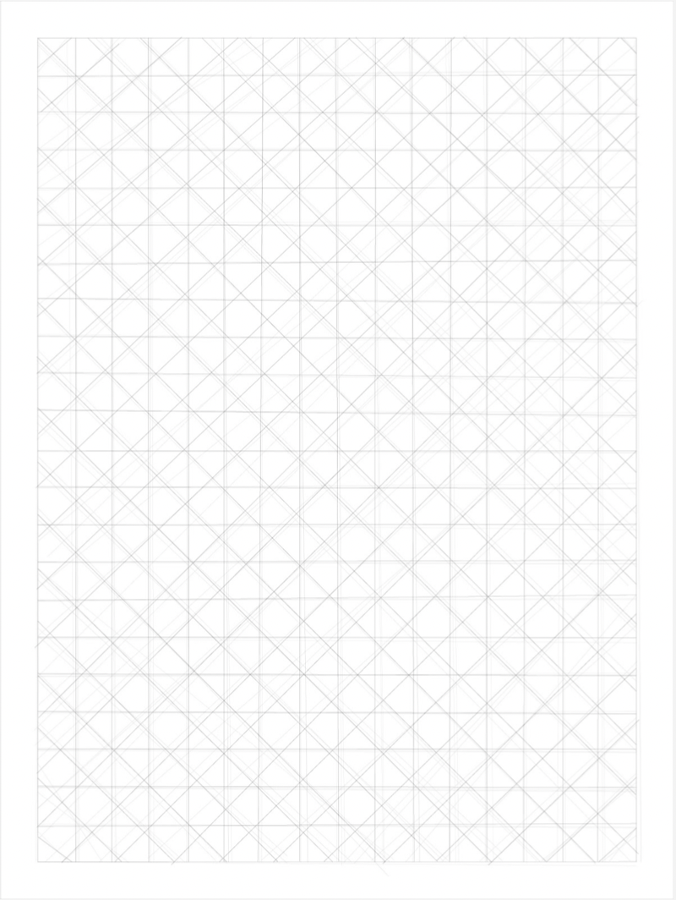
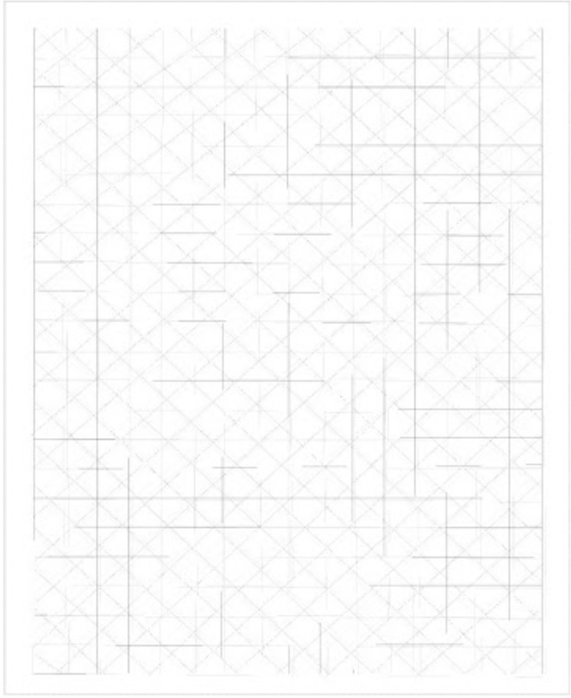
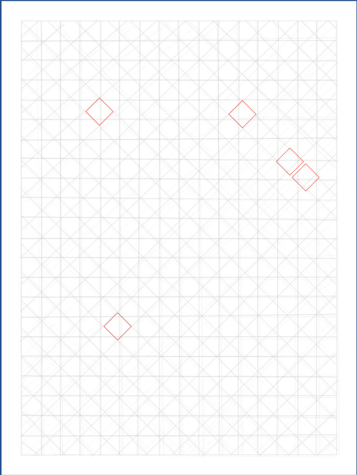
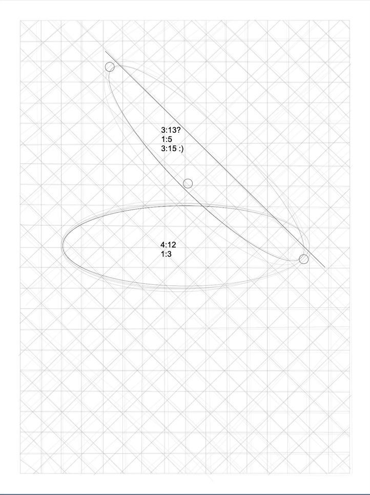
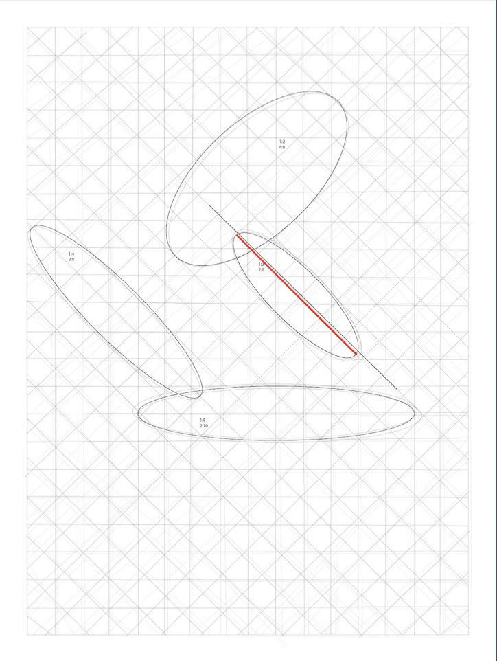
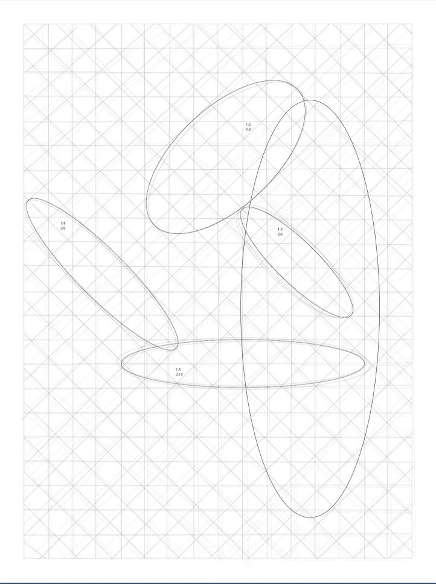
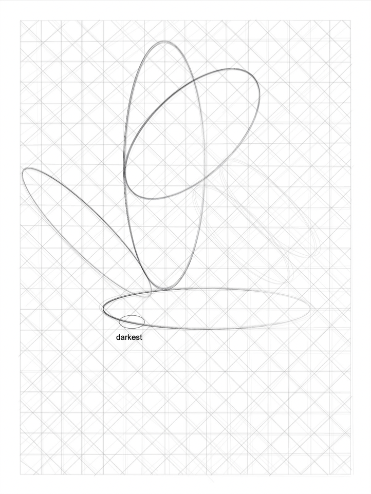
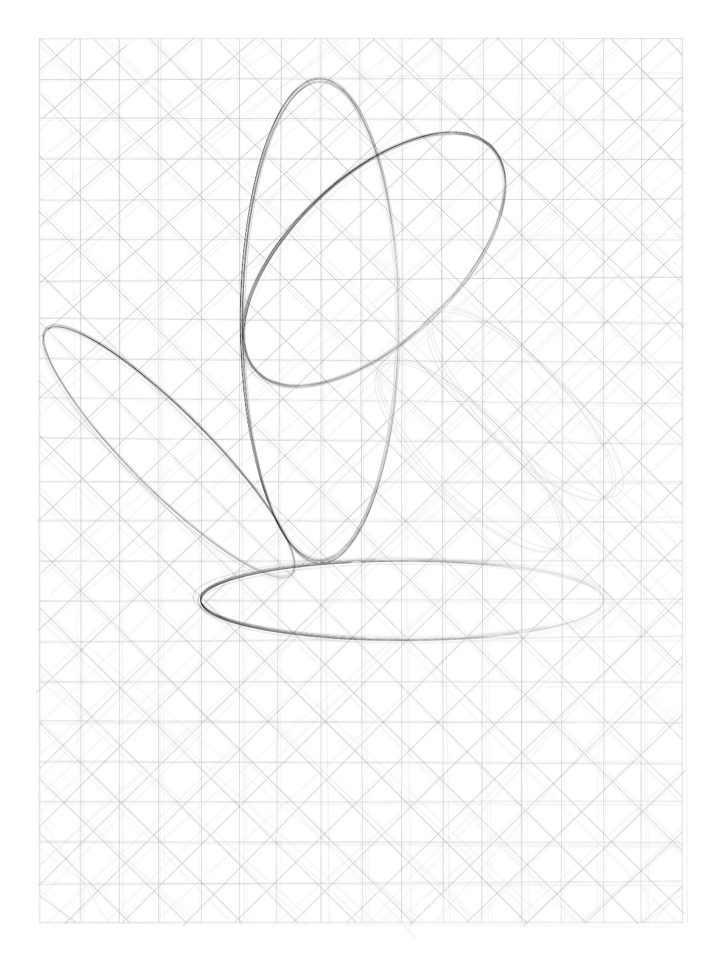
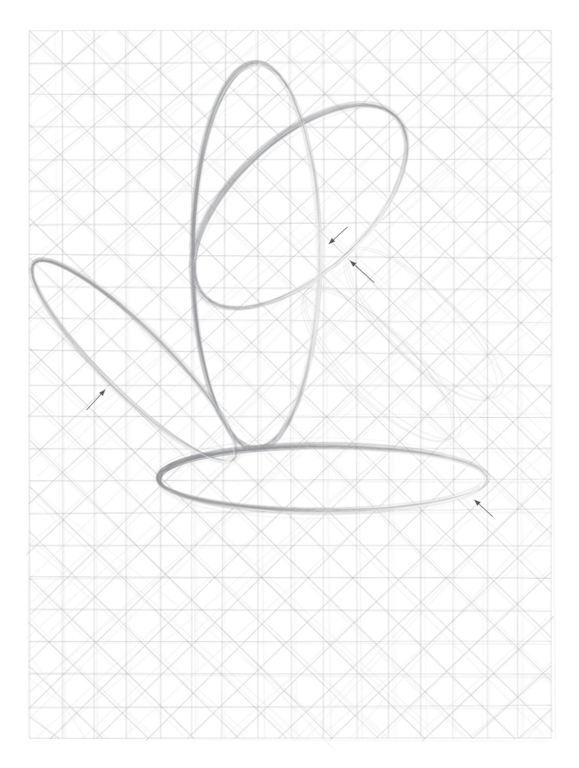
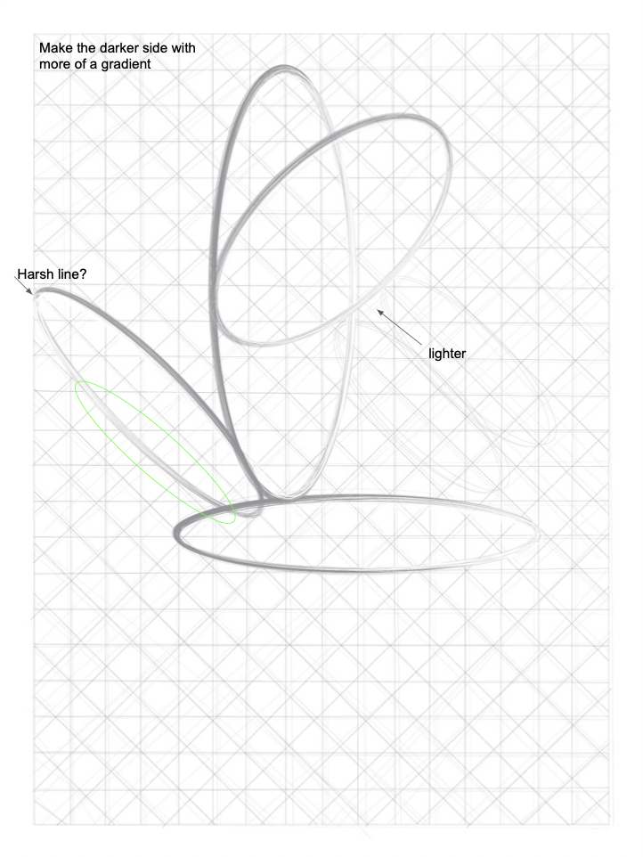
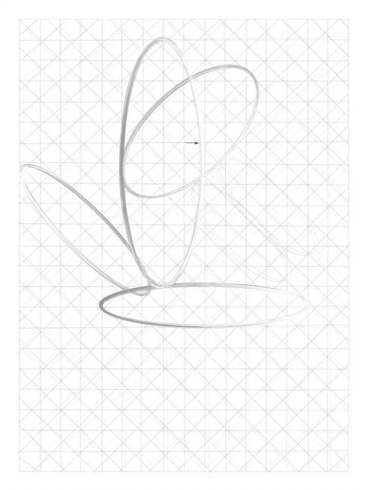
Next Project